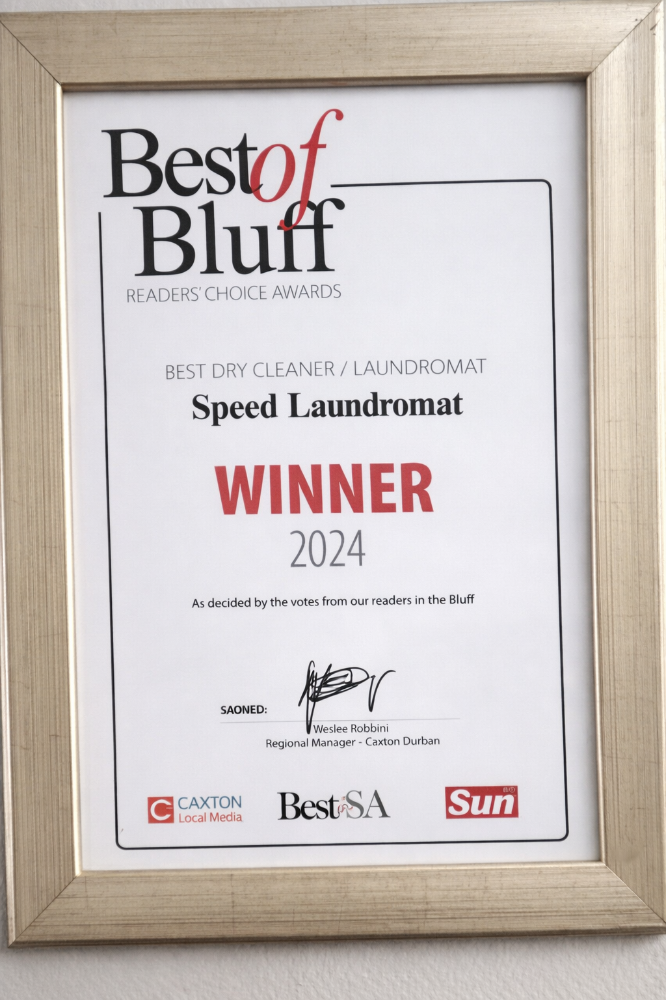

Speed Laundromat is a proudly South African-owned business with a genuine passion for what we do, and it shows in how we handle every load. We are committed to delivering reliable, affordable, and high-quality services for all your laundry needs. Recognized as the Best of Bluff winner in 2024 and securing 2nd place in 2025, our growing streak reflects our dedication to customer satisfaction. We offer a wide range of services designed to make your life easier. Our owners are hands-on and very passionate, and we ensure that every item is treated delicately and with care, because we believe you deserve nothing less than our very best.
Our goal is to keep maintaining the high standards that inspire us while evolving to become the reliable and trustworthy laundry business in our community. By offering reliable, effective, and cost-effective services, we intend to make life easier for our customers. As we grow, we aim to remain committed to our hands-on attitude, to ensure every customer experience reflects our passion, care, and devotion to quality.
